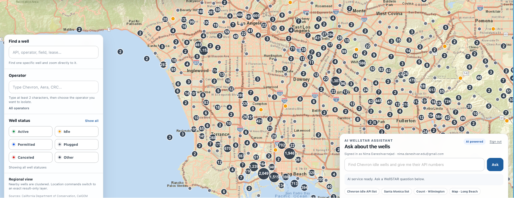

Interactive California well discovery with map-based search and an AI assistant.
California contains extensive legacy oil and gas infrastructure, including plugged and abandoned wells. Although state agencies provide public records and mapping services, locating and interpreting wells by city, county, operator, status, or API number can be challenging for the general public.
Improved WellFinder combines public data from the California Geologic Energy Management Division (CalGEM) with an interactive map and a large language model (LLM)-based assistant. Users can search for individual wells, filter the map by operator or well status, and ask contextual questions about the number and types of wells within California cities and counties.

The AI assistant may produce incomplete, outdated, or incorrect information. Users should verify its responses against the underlying CalGEM data and official regulatory sources before using the results for research, compliance, safety, legal, or operational decisions.
Please limit questions to California oil and gas wells and the information available within the application. The AI harness and its guardrails are still being refined based on user feedback, so questions from unrelated contexts may produce unreliable responses.
| Domain | California oil and gas wells |
|---|---|
| Data source | CalGEM Well Finder API |
| Interface | Interactive map, filters, and contextual AI assistant |
| Hosting | Netlify |